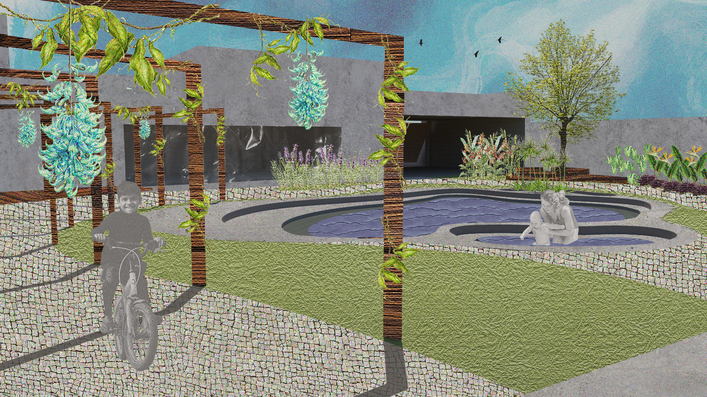
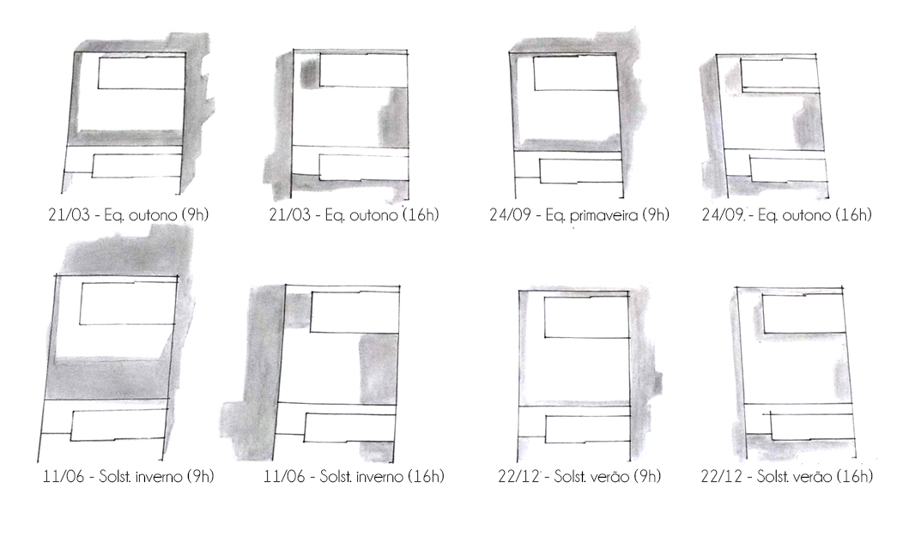
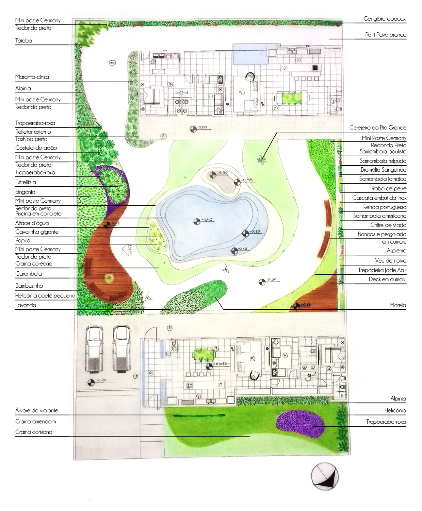
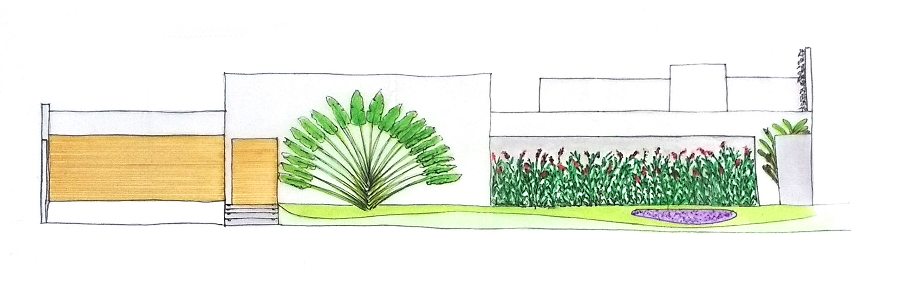
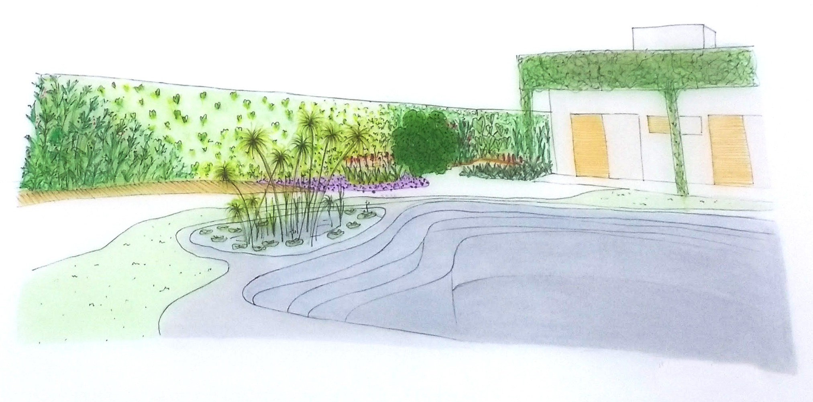
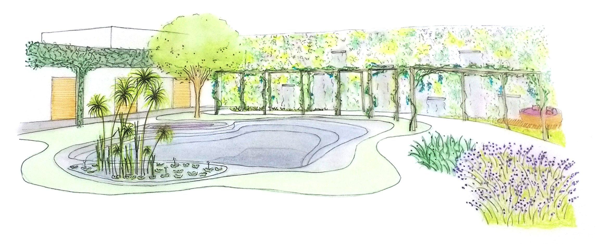
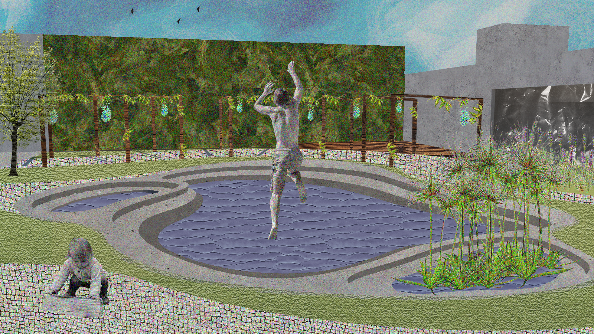

×

A Residência Gomieiro é localizada na cidade de Londrina, no bairro Tucanos. O projeto paisagístico abrange uma área total de 743 m², composta pela fachada da residência e interior do terreno. O núcleo familiar é composto por um jovem casal de advogados e uma filha adolescente. Apesar de não serem numerosos, os integrantes da família recebem visitas frequentes de parentes para reuniões familiares. A residência será dividida em dois blocos dispostos no terreno. O primeiro, já construído, é utilizado pelos moradores e o outro, situado mais ao fundo, será reservado para estadia de hóspedes e realização de eventos.

A proposta foi desenvolvida a partir da intenção dos moradores de estabelecer um refúgio para a correria do cotidiano em seu quintal. Assim, desenvolveu-se ambientes de convívio social e íntimos, que ora promoveriam a convivência familiar e o lazer, ora proporcionariam contemplação e silêncio, de acordo com a necessidade dos usuários.
A implantação do elemento água no projeto paisagístico de uma maneira orgânica e natural foi uma das exigências da família, dessa maneira, o desenho surge a partir do estabelecimento de uma piscina na região central no jardim, de acordo com a luminosidade disponível. Os diferentes usos não são separados visualmente, apenas com elementos vegetais ou arquitetônicos que propõe uma mudança, mas mantêm o contato visual. Portanto, o jardim proposto preserva sua amplitude, que é potencializada pelos diferentes focos visuais distribuídos pela grande área. As zonas foram divididas em: acesso, habitação, lazer, conexão, permanência, contemplação, circulação, extensão e serviço.
Para contrastar com as edificações angulares, propõe-se desenhos orgânicos inspirados nos projetos do paisagista Burle Marx, a fim de incorporar ritmo, elegância e movimento à área. O tipo de vegetação foi definido a partir dos efeitos sensoriais que cada espécie de planta desperta nos indivíduos, a fim de criar percursos que exploram cinco sentidos, estimulando a percepção de acordo com as cores, texturas, cheiros e sabores presentes na vegetação assim como os sons dos elementos que compõe o conjunto paisagístico. As plantas também incorporam texturas e volumetria ao terreno plano, evidenciando as zonas e trazendo dinamicidade.


Fachada
Toda a composição buscou resgatar a escala humana ao projeto, minimizando a altura das paredes de concreto com vegetação. Na fachada, a parede recuada emoldura Alpínias (Alpinia purpurata), que compõem um plano de altura intermediária em conjunto com Helicônias (Heliconia hostrata). São utilizadas como forração as gramas amendoim e coreana (Arachis repens e Zoysia tenuifolia), que direcionam o usuário à entrada da casa. Uma mancha de Trapoeraba-roxa (Tradescantia pallida purpurea) traz cor e textura para a fachada.
O acesso foi alterado para criar um corredor que traduz a importância do projeto paisagístico para a residência. Através de um ambiente de transição exterior-interior, evidencia a ideia de refúgio almejada pelos moradores.
A piscina de desenho orgânico conversa com a vegetação e remete às formas de um lago natural, oferecendo não apenas um lugar para atividade física e lazer como para contemplação. Possui dois espaços de profundidade intermediária: um que propõe a permanência, formando um banco com sombra confortável proporcionada pela Cereja-do-rio-grande (Eugenia involucrata), indicada para proximidade de piscinas e que atrai pássarinhos, e outro que forma um pequeno lago, com plantas aquáticas que funcionam tanto como barreira visual para privacidade, como criador de novas paisagens. As espécies escolhidas foram o Papiro (Cyperus giganteus), a Cavalinha-gigante (Equisetum giganteum) e o Alface d’água (Pistia stratiotes).

Perspectiva 1
A conexão entre edificações é demarcada por um pergolado de madeira enfeitado por trepadeiras Jade-Azul (Strongylodon macrobotrys), que garantem um espaço acolhedor e semi-coberto. O formato orgânico quebra a rigidez do projeto arquitetônico e cria sequências de paisagens distintas pr’oduzidas pelo enquadramento dos pilares. O caminho é revestido de Petit pave branco, contornado por Marantas-Pavão (Calathea makoyana) e Avencas (Adiantum raddianum).
A percepção visual é estimulada com as cores e pendentes das trepadeiras ao longo do percurso. O elemento água é representado por um espelho d’água que divide os dois planos perpendiculares (piso e paredes). Para a parede alta e sombreada é amenizada com um jardim vertical e cascatas, proporcionando mais leveza e estímulo no trajeto (Samambaia-felpuda - Pyrrosia lingua; Samambaia Jamaica - Phymatodes scolopendria; Chifre-de-veado - Platycerium bifurcatum; Samambaia-paulista - Nephrolepis Pectinata; Bromelia sanguinea - Guzmania sanguinea; Rabo-de-peixe - Naphrolepis biserrata; Véu-de-noiva - Gibasis schiedeana; Samambaia-americana - Nephrolepis exaltata; Renda-portuguesa - Davallia fejeensis; Asplênio - Asplenium nidus e Planta-batom - Aeschynanthus pulchere).

